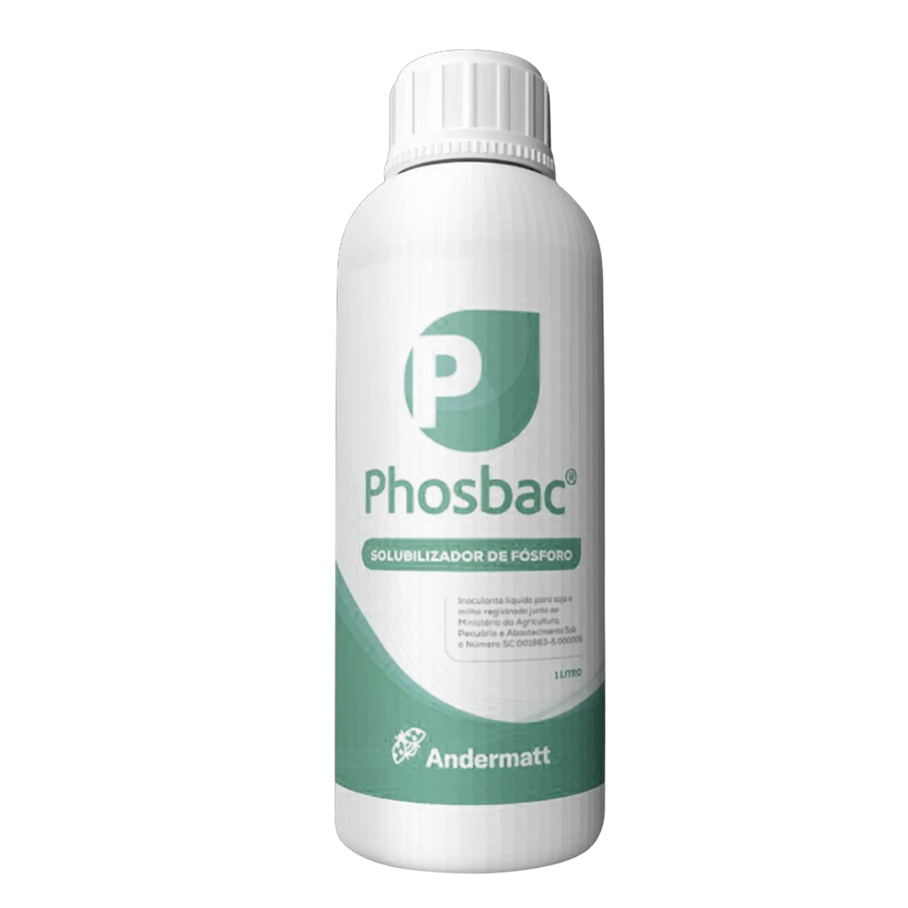
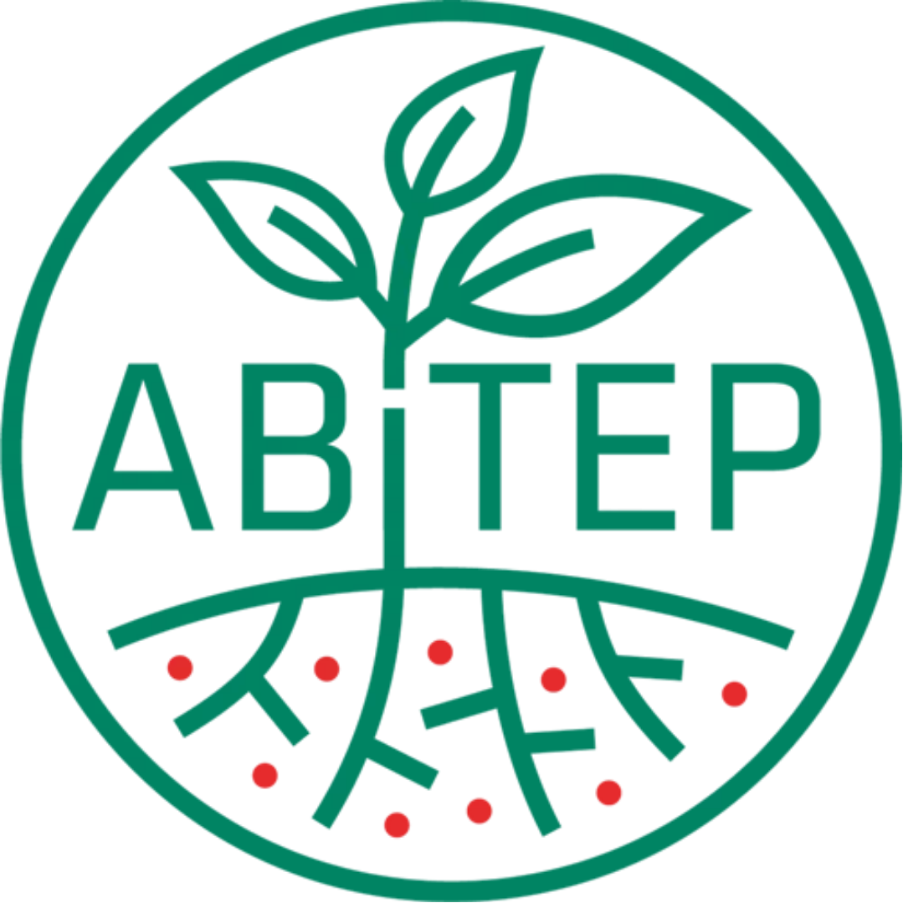

No apliques más. Aprovecha lo que ya tienes. Phosbac (Bacillus velezensis FZB45) transforma el fósforo bloqueado en nutrientes asimilables con una eficacia científicamente superior.

Estimula el crecimiento radicular mediante la producción de fitohormonas (auxinas).
Libera el fósforo atrapado en el suelo, dejándolo listo para ser absorbido.
Activa las defensas naturales de la planta frente a estrés biótico y abiótico.
La nutrición balanceada y el vigor inicial se traducen en más quintales por hectárea.
Phosbac no es magia, es bioquímica avanzada. La cepa FZB45 despliega un arsenal enzimático y de ácidos orgánicos para minar el fósforo del suelo.
Libera ácidos glucónico, 2-cetoglucónico y cítrico. Estos ácidos acidifican el microambiente de la raíz y actúan como agentes quelantes, "secuestrando" el Calcio, Hierro o Aluminio que retienen al fósforo, liberándolo inmediatamente.
Sintetiza fosfatasas ácidas y alcalinas (genes phoD, phoC). Estas enzimas rompen los enlaces de fósforo orgánico en la materia orgánica del suelo, mineralizándolo para la planta.
Único por su alta producción de fitasas, enzimas capaces de degradar fitatos, una forma de fósforo orgánico muy común pero difícilmente accesible para las plantas sin ayuda microbiana.
Más de 40 años de investigación respaldan a la cepa FZB45. Aquí presentamos datos de ensayos de campo y laboratorio.
Gráfico de Solubilización (mg/L)
FZB45 vs Control vs Otros
Phosbac demuestra una capacidad superior de liberación de ortofosfatos a partir de fosfato tricálcico.
Rendimiento (kg/ha)
+12% vs Testigo Químico
Ensayos de campo muestran consistencia en el aumento de rendimiento gracias a una mejor nutrición fosfatada.
Gracias a la tecnología de endosporas, Phosbac puede aplicarse en el tratamiento profesional de semillas (TPS) y mantenerse viable por más de 300 días sobre la semilla tratada, sin perder eficacia.
100% compatible con fungicidas, insecticidas y otros terápicos de semilla convencionales. No requiere tanque separado ni condiciones especiales de mezcla.
Puede aplicarse tanto en tratamiento de semillas como en surco (chorro). Su formulación líquida SC (Suspensión Concentrada) facilita la dosificación y no obstruye filtros.
Descubra por qué Phosbac es superior tanto en biología como en concentración.
En la naturaleza, la supervivencia lo es todo. Phosbac (Bacillus velezensis) forma endosporas, estructuras blindadas que protegen a la bacteria del calor, la sequía y los químicos.
A diferencia de las frágiles Pseudomonas, Phosbac espera pacientemente en el envase y en el suelo hasta que las condiciones son ideales, garantizando que lo que compras es lo que llega a la raíz.
Phosbac tiene una concentración ultra-alta de 2,5 x 10¹ UFC/ml. Calcule cuánto producto de la competencia necesita para igualar nuestra dosis.
Ej: 1 x 10 UFC/ml
Para igualar la carga biológica bacteriana.

La tecnología detrás de Phosbac proviene de ABiTEP GmbH en Berlín, Alemania, pioneros en el desarrollo de bioestimulantes a base de Bacillus. ABiTEP GmbH es propiedad del grupo Andermatt, líder suizo en soluciones biológicas, garantizando los más altos estándares de calidad y resultados a campo.
No dejes que tu fertilizante se quede bloqueado en el suelo. Actívalo con la ciencia de Phosbac.